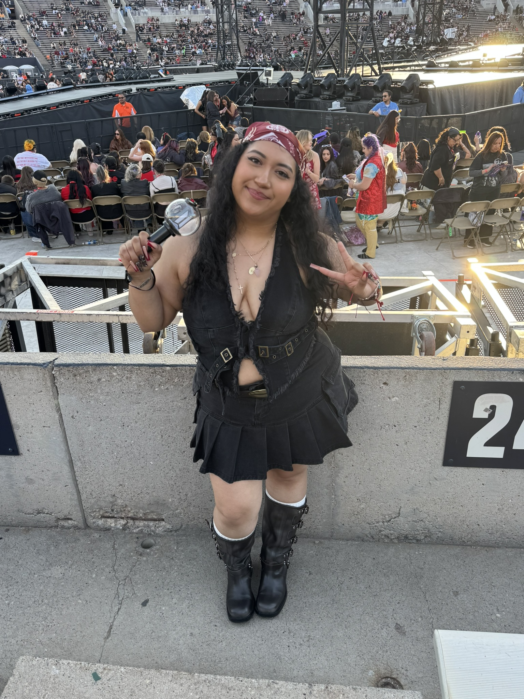

Why I Created This Website
Hi! My name is Jeanette and I am in love with going to concerts no matter the music genre. I believe getting to experience a concert especially for your favorite artist is a must do at least once in your life. I wanted to create this site because for some it could be their first concert and if they go alone or even they go with friends I wanted to make something that could inform people on how they could prepare or even bring with them on the special event even if it is for just a few hours. Some might just want to know what concert etiquette is nowadays and get the jist of it before going and this site could help with that.
Although I am sharing what I personally do, many people aren’t going to do the same thing as I do but you can get inspired by what information I provide and do what you are comfortable in doing. A reason why I created this site is because when I started going to concerts I never knew what to wear, what to bring and never got prepaid parking, especially when I travelled to other places than Atlanta. I wanted to provide some information about concert-going because some might not have anyone to go with and don’t go to concerts unless they are accompanied, which I don’t think should be the case. I don’t think we should stop ourselves from going to a concert we would love to experience just for other people that don’t want to accompany us.
We should be able to enjoy the little things in life even if it is by ourselves. Although for many concerts I have gone with friends or family I have gone to few by myself and even had a solo trip just for a concert I did not want to miss and it taught me to truly not wait for a response for people that aren’t ready when I am. But also don’t go by yourself if you aren’t comfortable, safety is also important and that’s why I created this site to provide information to those who are questioning going to a concert and are curious about the process, because yes, it is a process. So, go to that concert! Stay safe and Stay healthy while doing it! AND most importantly make friends (you all have something in common).
Follow Me
You can follow me on Instagram to see more of my concert experiences!
Instagram